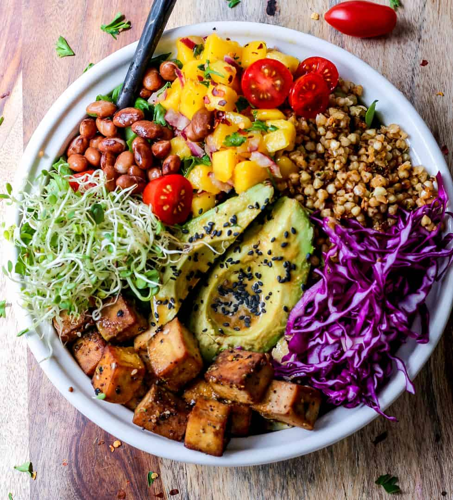

2 cups flour, 1/2 cup sugar, 1/4 cup brown sugar, 1 tbsp baking powder, 1/2 tsp salt, 1 cup milk, 1/2 cup butter, 1 egg, 1 cup blueberries, 1 lemon (zest and juice)
Instructions
1. Mix dry ingredients. Combine wet ingredients, then mix with dry.
2. Mash avocado with lemon juice, salt, and pepper.
3. Spread on toast and sprinkle with red pepper flakes.

Vegan Buddha Bowl
By VeganAnna
Ingredients:
1 cup quinoa, 1 can chickpeas, 1 avocado, Cherry tomatoes, cucumber, carrots, 1/4 cup tahini, 2 tbsp lemon juice
Instructions
1. Cook quinoa. Roast chickpeas with spices.
2. Mix tahini, lemon juice, and water.
3. Assemble bowls with quinoa, chickpeas, veggies, and dressing.
Healthy Snacks for On-the-Go
Snacking doesn't have to be unhealthy! Our latest roundup of recipes features nutritious and delicious snacks perfect for those on the go. From energy-boosting protein bars...
Baking Tips and Tricks: Mastering the Perfect Loaf
Baking bread at home can be both rewarding and challenging. Our expert bakers share their top tips and tricks to help you master the perfect loaf. Learn about the importance...